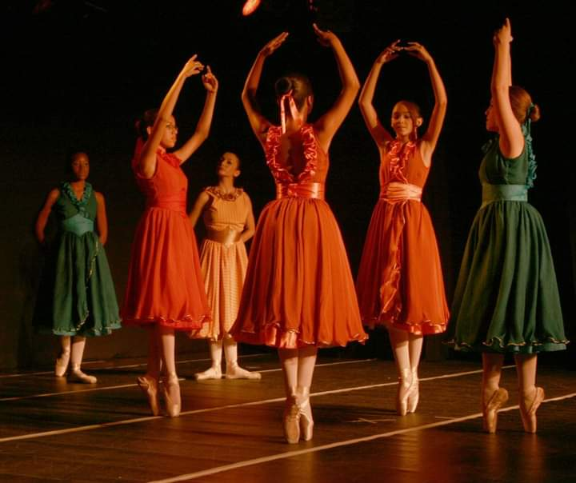
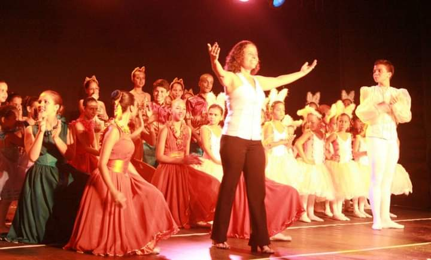

Ile Ashe Akin Iyasaba — Projeto Social de Balé
Todo passo começa com um sonho.
Com 27 anos de atuação comunitária no bairro Vista Linda/Itacibá, em Cariacica, o Ile Ashe Akin Iyasaba retoma em 2026 seu projeto de balé: arte, identidade cultural e inclusão social.
Nossa história
Raízes afro-brasileiras, arte que transforma
Fundado em 1997 pela Ialorixá Ângela Maria Neppel, Mãe Adecy de Iemanjá, o Ile Ashe Akin Iyasaba é referência social, cultural e educativa no bairro Vista Linda.
Entre 2006 e 2012, o Ile desenvolveu um projeto de balé inteiramente por iniciativa própria, com apresentações em teatros, autoestima cultivada e inclusão social pela dança.
Fundado em 1997
Bairro Vista Linda
27 anos de comunidade

27 anos de atuação comunitáriaNosso impacto
Números que contam histórias
Autoestima & Identidade
O balé une técnica clássica e raízes afro-brasileiras, fortalecendo orgulho cultural.
Formação Artística
O projeto ofereceu aulas, ensaios e apresentações reais para crianças da comunidade.
Retomada em 2026
A demanda local e a trajetória do Ile movem a volta do Projeto Arte Kayode.
Como funciona
O programa Arte Kayode
Turmas gratuitas para crianças, adolescentes e jovens no bairro Vista Linda/Itacibá, em Cariacica/ES.
Baby Class
4 a 6 anos · Sábado, 09h
- Introdução lúdica ao movimento
- Postura e consciência corporal
- Ritmo e coordenação motora
Infantil
7 a 15 anos · Sábado, 10h
- Técnica clássica: barra e centro
- Expressão artística e musicalidade
- Preparação para apresentações
Juvenil
15 a 20 anos · Sábado, 11h
- Técnica clássica avançada
- Repertório e variações
- Orientação artística
Vozes do projeto
O que dizem quem vive isso
Momentos
Galeria de imagens
Registros de aulas, ensaios, apresentações e da comunidade.
Blog do projeto
Postagens e novidades
Acompanhe a história, os bastidores e as novidades do Projeto Arte Kayode.
Faça parte
Como você pode transformar vidas
Cada contribuição mantém uma criança dançando, aprendendo e sonhando.
Doação Mensal
Contribuições regulares garantem continuidade e planejamento.
Quero doarVoluntariado
Compartilhe talento e tempo em aulas, comunicação ou suporte.
Ser voluntárioParceria Institucional
Empresas e instituições podem apoiar espetáculos e estrutura.
Falar com a equipeDoação por Pix
Seu apoio mantém o sonho destes jovens dançando
Abra o aplicativo do seu banco, escaneie o QR Code ou copie o código Pix abaixo. Você escolhe o valor da contribuição.
Chave Pix — CNPJ
53.564.492/0001-04
Escaneie para doar
Pix sem valor fixo
Fale conosco
Vamos conversar sobre isso
Para inscrição, voluntariado, doação ou parceria, entre em contato com nossa equipe.
contato@ileashe.org.br Bairro Vista Linda/Itacibá, Cariacica — ES